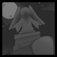
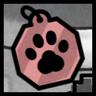
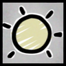
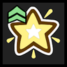
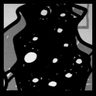
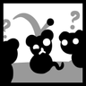
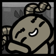
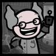

El top #3 roguelites & RPG's del momento
Cría. Lucha. Evoluciona
De Edmund McMillen (The Binding of Isaac, Super Meat Boy) y Tyler Glaiel (Closure, The End Is Nigh) llega un roguelite de legado profundamente táctico que pregunta: ¿Y si pudieras criar al ejército perfecto de guerreros con bigotes, para luego enviarlos a aventuras tácticas en busca de comida, dinero y montones de tesoros?
Mewgenics fue anunciado originalmente por Team Meat en 2012 como una continuación de Super Meat Boy, con Edmund McMillen y Tyler Glaiel al frente del proyecto. Desde sus inicios, McMillen lo describió como un juego extraño y ambicioso, un híbrido entre The Sims, Pokémon, Animal Crossing y Tamagotchi, con la intención de crear un mundo vivo donde las decisiones del jugador tuvieran consecuencias significativas. El desarrollo fue prolongado y sufrió cancelaciones, hasta que McMillen readquirió los derechos y retomó el proyecto con Glaiel en 2018. Finalmente, Mewgenics se lanzó oficialmente el 10 de febrero de 2026 a través de Steam
El juego combina dos etapas principales: combate y cría. En la fase de combate, el jugador controla un equipo de cuatro gatos con clases como cazador, mago o sanador, cada uno con estadísticas y habilidades únicas. Los combates se desarrollan en una cuadrícula isométrica generada proceduralmente, donde el clima y el entorno afectan el rendimiento de los gatos. La muerte de un gato tiene consecuencias permanentes, incluyendo la pérdida de objetos y posibles mutaciones. En la fase de cría, los gatos supervivientes pueden aparearse, transmitiendo rasgos genéticos a la descendencia. La endogamia puede generar mutaciones y deficiencias, lo que añade un componente estratégico a la gestión de la población felina
La narrativa principal se estructura en tres actos, cada uno con áreas y desafíos únicos. Algunas zonas están ocultas y requieren completar misiones complejas relacionadas con jefes y eventos de la historia. Entre las áreas secretas destacan el Dominio Palpitante y la Grieta, accesibles mediante cadenas de misiones que ponen a prueba la estrategia del jugador. Cada acto permite avanzar en la historia mientras se desarrollan las habilidades y la genética de los gatos, creando una experiencia dinámica y rejugable
Mewgenics destaca por su estilo caótico y extraño, mezclando gatos mutantes, enemigos raros y situaciones inesperadas, lo que lo convierte en un juego profundo y altamente rejugable. Su historia y desarrollo reflejan tanto la ambición de sus creadores como los desafíos de un proyecto indie que buscaba innovar en la simulación de vida y el rol táctico

Capitulos
Clases
Clima
Efectos
Eventos
Habilidades
Mutaciones
NpcsCada victoria y derrota de los gatos contribuye al legado del jugador. Nada se mantiene para siempre, y los gatos retirados pueden heredar rasgos y mutaciones, con resultados imprevisibles
Los combates se desarrollan en cuadrículas, afectadas por el clima, el terreno y los estados alterados. Los gatos tienen habilidades activas y pasivas, con la posibilidad de generar sinergias únicas
Mewgenics incorpora elementos cómicos como el uso de excremento y pedos para potenciar o bloquear acciones de los gatos. Este tipo de humor grotesco es típico de McMillen y se integra en la jugabilidad de manera central
La comida para gatos se agota más rápido de lo que parece, y el jugador debe administrar recursos cuidadosamente para mantener a su equipo feliz y activo
Aprende a colocar bien a tus gatos y a combinar habilidades para maximizar el daño. Gestión del equipo: Prioriza la crianza de gatos con buenas estadísticas y mutaciones, ya que esto influye en las generaciones futuras
Aunque son más peligrosas, las rutas difíciles pueden ofrecer recompensas significativas a largo plazo
Asegúrate de tener una habitación de cría bien equipada y mejora tu casa para aumentar la probabilidad de tener gatos fuertes
Utiliza la vista táctica para visualizar mejor los enemigos y evitar peleas largas
La banda sonora es una exquisitez de pies a cabeza, vale la pena escucharla almenos una vez en la vida, principalmente por lo cómico que todas las canciones sean respecto a gatos y aún así llegue a sonar como una absoluta joya artística, en lo personal una de mis favoritas es Feline Invader, sin embargo, hay otras 8 más que suenan increible con su estilo de Jazz, su álbum puede encontrarse en las diversas plataformas tales como Youtube y Spotify